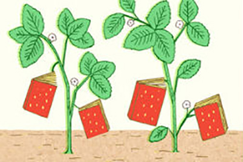
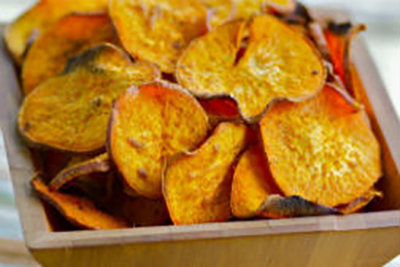
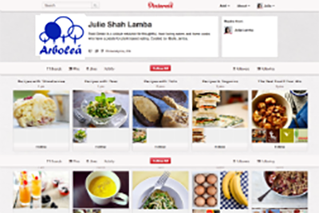
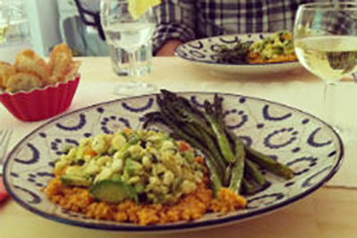

Mejores Libros de Cocina de Verano 2012
Con lo mejor de la temporada que viene de "huertas, granjas y jardines," NPR ha reunido una impresionante colección de 10 libros de cocina de verano.
23 de marzo de 2022, Leer más...

Cómo hacer Chips de Verduras
Hace aproximadamente un mes, me comí casi una caja entera de kale chips. Mi hermano y yo estábamos visitando a nuestro primo en Brooklyn, y antes de un vegetariano muy cuidadosamente preparado ...
17 de marzo de 2022, Leer más...

Únase a Nosotros en Pinterest!
Si pudiera comisariar un libro de cocina para usted, esta sería la misma.
16 de mayo de 2022, Leer más...

Recetas de una Cena de Domingo
Yo no podía entender por qué hacer con las rebanadas deliciosas de la torta de pera que traje a casa de esta maravillosa cena Domingo - comerlos lentamente, un poco a ...
15 de mayo de 2022, Leer más...